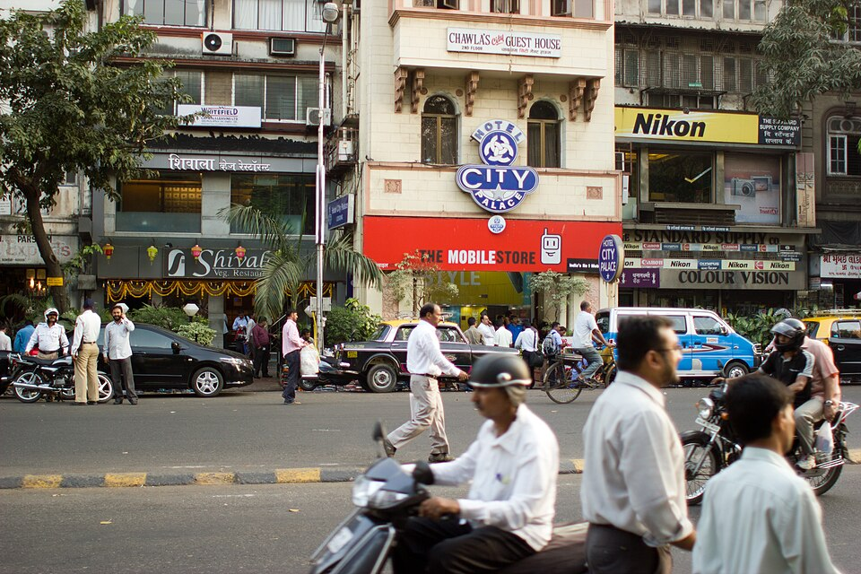

भारत में घटी सस्ते स्मार्टफोन की मांग, प्रीमियम फोन के बाजार में तेजी
भारत के स्मार्टफोन बाजार में बड़ा बदलाव आया है। साइबरमीडिया रिसर्च (CMR) की रिपोर्ट के अनुसार, 7 हजार रुपये से कम कीमत वाले बजट फोन की शिपमेंट में भारी गिरावट आई है, जबकि 25 हजार रुपये से महंगे प्रीमियम स्मार्टफोन की मांग तेजी से बढ़ी है।

भारतीय स्मार्टफोन बाजार में उपभोक्ताओं की पसंद बदल रही है। साइबरमीडिया रिसर्च (CMR) की रिपोर्ट के मुताबिक, साल 2026 की तीसरी तिमाही (जुलाई से सितंबर) में देश के कुल स्मार्टफोन शिपमेंट में सालाना आधार पर 20 प्रतिशत की कमी दर्ज की गई है। इस गिरावट का सबसे बड़ा असर एंट्री-लेवल और बजट स्मार्टफोन पर पड़ा है।
आंकड़ों के अनुसार, 7 हजार रुपये से कम कीमत वाले स्मार्टफोन की शिपमेंट में 94 प्रतिशत की भारी गिरावट आई है। वहीं, 7 हजार से 24,999 रुपये तक के फोन की शिपमेंट भी 42 प्रतिशत घटी है। बाजार जानकारों का कहना है कि मेमोरी और अन्य जरूरी हार्डवेयर कंपोनेंट महंगे होने के कारण कंपनियों के लिए बेहद सस्ते फोन उतारना कठिन हो गया है। इसके चलते लोग कम कीमत वाले नए फोन खरीदने के बजाय अपने पुराने स्मार्टफोन का ही लंबे समय तक उपयोग कर रहे हैं।
इसके उलट, प्रीमियम और सुपर-प्रीमियम स्मार्टफोन सेगमेंट में जबरदस्त तेजी देखी जा रही है। 25 हजार से 49 हजार रुपये की कीमत वाले फोन की मांग में 38 प्रतिशत और 50 हजार से 1 लाख रुपये तक के सुपर-प्रीमियम फोन की शिपमेंट में 32 प्रतिशत की बढ़ोतरी हुई है। सैमसंग 17 प्रतिशत की बाजार हिस्सेदारी के साथ देश की शीर्ष स्मार्टफोन कंपनी बनी हुई है, हालांकि उसकी शिपमेंट में भी 8 प्रतिशत की गिरावट दर्ज की गई है।
और पढ़ें
 व्यापार
व्यापारआईपीएल से संन्यास के बाद भी बरकरार है महेंद्र सिंह धोनी की ब्रांड वैल्यू
भारतीय क्रिकेट टीम के पूर्व कप्तान महेंद्र सिंह धोनी ने आईपीएल से संन्यास की घोषणा कर दी है, लेकिन उनकी लोकप्रियता और ब्रांड वैल्यू अभी भी शीर्ष पर बनी हुई है।
 व्यापार
व्यापारदेश में तेजी से बढ़ रहे पर्सनल लोन, 46 से 55 वर्ष के लोग आगे
पैसाबाजार के नए आंकड़ों के अनुसार देश में पर्सनल लोन लेने वालों की संख्या में 32 प्रतिशत की बढ़ोतरी हुई है। इसमें 46 से 55 वर्ष की आयु वर्ग के लोगों की संख्या में सबसे अधिक 70 प्रतिशत का उछाल दर्ज किया गया है।
व्यापार8वें वेतन आयोग में पेंशनर्स संगठन की मांग, न्यूनतम पेंशन ₹45000 हो
भारत पेंशनर्स समाज ने 8वें वेतन आयोग के तहत पेंशन को अंतिम वेतन के 50% से बढ़ाकर 67% करने, फैमिली पेंशन 50% करने और न्यूनतम पेंशन ₹45,000 तय करने की मांग उठाई है।
व्यापारइंटेल में छंटनी जारी, एक साल के भीतर कम हुए चार हजार कर्मचारी
चिप बनाने वाली अमेरिकी कंपनी इंटेल में खर्च घटाने और कारोबार को बेहतर बनाने के लिए छंटनी का दौर जारी है। पिछले एक साल में कंपनी के कर्मचारियों की संख्या में करीब 4,000 की कमी आई है।